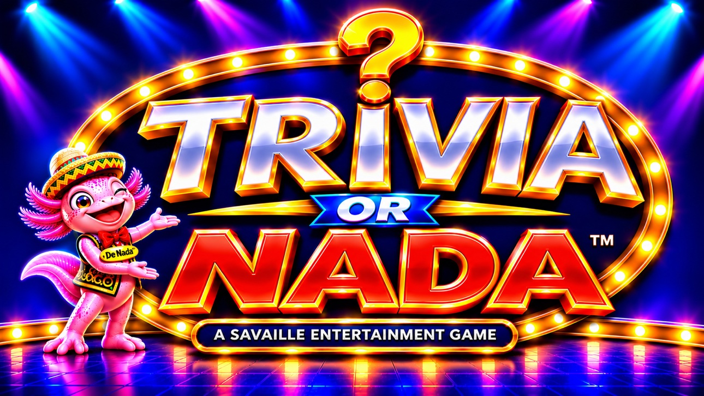

20 questions. Four rounds. Bank your points — or walk away with nada.
Score 1,000+ for a bonus round · A perfect 1,280 unlocks the Legend Gauntlet — can you beat it?
Pace — how much time on the clock?
One scored run a day — everyone gets the same 20 questions. Come back tomorrow to keep your streak alive.
That challenge couldn't be loaded — the link may be incomplete, or it was made by a different version of the game. No game was started; you can play a fresh Gauntlet instead.
More ways to play
Enjoying the game. Leave a tip
Session best: —
Free to play. No app. No sign-in.
Loading questions\u2026
★ Creator access
Creator games are practice only — labelled Creator in play and on results, and they never save to any leaderboard, the Hall of Fame, or a backup.
How to play
- Round 1 — Easy, 5 pts each. Q5 is a typed double-or-nothing: get it right and your total doubles, get it wrong and you lose everything. You can pass.
- Round 2 — Harder, 10 pts each. Q10 is typed: right doubles your total, wrong loses only the points banked this round. You can pass.
- Round 3 — Hard, 20 pts each. Q15 works like Q10 — and yes, you can pass on round 3 too.
- Round 4 — Very hard, 40 pts each, all typed-in. Q16–Q20 are all typed-in answers — no multiple choice in Round 4. Q16–Q19 still score 40 pts each when right and nothing when wrong — and like every typed-in question they have a Pass button: passing scores nothing, loses nothing, and reveals the answer (a timeout counts as a pass). Pictures and capitals still show their image or outline, you just type the answer. Q20 is the final typed question — and before you see it, you choose how much to wager: stake anywhere from 1 point up to your whole total. Get it right and your wager is added to your total; get it wrong and it's taken away. Q20 has no Pass button — and if the clock runs out, that counts as wrong and the wager is lost. Stake it all and it's the old double-or-nothing: double it all, or nada. If your total is 0 there's nothing to wager, and Q20 plays with nothing at stake.
- Bonus round. Finish the Gauntlet with 1,000 points or more — but not a perfect 1,280 — and a 5-question bonus round starts, labelled BONUS ROUND: Super hard typed questions — a tier above the regular game's Very hard — on the Round 4 clock (45 seconds, 90 at Relaxed pace), spelling counts. The first four score 5 points each, added to your total; wrong answers cost nothing, Pass is allowed, and a timeout counts as a pass. The fifth question is the doubler: answer it right and the bonus points you earned on the first four double (four right = 20 becomes 40 — the most the bonus round can add); answer it wrong, pass, or run out of time and you keep the bonus points you earned. The doubler question itself adds no points beyond the doubling. Bonus points count toward your final score and your saved high score, and your final total is capped at 1,280 — a bonus can lift you to a perfect score, never past it.
- Legend Gauntlet. A perfect 1,280 skips the bonus round: the results screen offers “Start the Legend game” — 20 questions in 4 rounds, hardest-tier questions only, all typed, same points (5/10/20/40) and wager finales, on a faster clock: 20 seconds a question, 30 for Round 4 and the finales (40 / 60 at Relaxed pace). The rounds climb a difficulty ladder: Round 1 is Super hard, Round 2 Extremely hard, Round 3 Ludicrously hard, Round 4 Impossibly hard — and the final question is Genius Level. Legend scores save to the same pace board, labelled “Legend Gauntlet”, and Legend games earn no bonus round.
- Legends Hall of Fame. The Legends Hall of Fame on the cover has two sections — Perfect Games for true perfect games and Legend Games for Legend Gauntlet finishes, each ranked best first — and a bonus game capped at 1,280 counts in neither; only the real perfect game does.
- Typed answers and spelling: Round 1 (Q5) is never strict — it is the easy round, so sound-alike answers score there, even for names, numbers, and short words, and it never shows a spelling warning. Partial names count in Round 1 too: a surname alone (just "Lenin"), or the name without its title ("Elizabeth II" for Queen Elizabeth II), scores — that tolerance is Round 1 only. Rounds 2 and 3 alternate on their finales: in each Gauntlet exactly one of Q10 / Q15 is strict and the other is forgiving, and which one is strict flips each new Gauntlet. Round 4 is always strict — every Round 4 question (Q16–Q20) is marked SPELLING COUNTS and must be spelled exactly. A strict question is marked SPELLING COUNTS up front; a forgiving finale shows no such warning and is judged sound-alike friendly. Every miss shows you the correct answer. Every typed-in question anywhere in the game — the finales, all of Round 4, and typed questions in any practice round — has a Pass button, with one exception: Q20, the final question, has none. Once your Q20 wager is locked there is no passing, and a timeout there counts as wrong and loses the wager. Everywhere else, pass to reveal the answer with no points gained and nothing you have banked lost. And whenever a forgiving judge accepts a near-miss spelling or a Round 1 partial name, the reveal shows the correct spelling, so you can see how close you were to perfect.
- Pace. Relaxed is the same game — same questions, scoring, and rules — with a longer clock. Relaxed scores are kept on their own high-score board on the cover, separate from Standard.
- Sound. The game plays short sounds on its own — a chime for a right answer, a buzz for a wrong one, a rising run when a wager finale lands, a tick as the clock runs out, and a fanfare for a perfect game. Sound is on by default and starts with your first tap. Don't want it? Tap the 🔊 Sound button on the cover (or the speaker button next to Quit while playing) to silence it — the game remembers your choice on this device.
- Questions are drawn from a built-in pool of over 7,500 questions: general trivia, famous faces, landmarks, flags, map shapes, paintings, movie stills, and capitals of countries, US states, and Canadian provinces — plus one Trivia question in every Gauntlet round, at most one LeAnn Rimes question and at most one video game question in any Gauntlet or Mixed Bag game, the full Trivia collection plus a 119-question LeAnn Rimes collection (with her portrait) in the practice rounds below — and banks of law, chemistry, periodic table, all sciences, medical, pop culture, music, advertising, marketing, riddles, sports, history, Hawaii, and Canada questions, mixed into the Gauntlet and the Mixed Bag and each with its own practice round below. This is a well-rounded trivia game, not a geography test: in the Gauntlet and the Mixed Bag, capitals, map shapes, and flags together turn up only a few times per game — the dedicated Capitals, Map Shapes, and Flags practice rounds below still serve them up in full.
- After you answer, most questions show a brief “Why this is right:” line under the correct answer — and again in the end-of-game review. Only questions with a verified explanation show one: if no sound reason could be written for a question, it shows none rather than a made-up one, so a reveal with no “Why” line is normal for those questions.
Trivia or Nada is a free online trivia game — 20 questions in 4 rounds with wager finales, a new Daily Gauntlet every day, practice rounds in 24 categories, and live leaderboards. No download, no sign-up.
Boards pace
Legends Hall of Fame
The legendary finishes on this device — Perfect games and Legend games each ranked best first.
Perfect Games
No perfect games yet — finish a perfect Gauntlet to enter the Hall of Fame.
Legend Games
No Legend games yet — finish a perfect game to unlock the Legend game.
Hall of Fame — Shared Standard pace
Perfect and Legend games from everyone playing at Standard pace — the shared side of the Hall of Fame, ranked with the honours above.
Perfect Games
Legend Games
Hall of Fame — Shared Relaxed pace
Perfect and Legend games from everyone playing at Relaxed pace — the shared side of the Hall of Fame, ranked with the honours above.
Perfect Games
Legend Games
SHARED LEADERBOARD —
ALL TIME — STANDARD PACE
Standard pace scores from everyone playing — the best Standard finishes from all players, not just this device.
ALL TIME HIGH SCORES
SHARED LEADERBOARD —
ALL TIME — RELAXED PACE
Relaxed pace scores from everyone playing — the best Relaxed finishes from all players, not just this device. Relaxed has its own board and is never ranked against Standard.
ALL TIME HIGH SCORES
SHARED LEADERBOARD —
THIS WEEK — STANDARD PACE
Standard pace scores from everyone playing this week — the fresh chase, reset every week.
THIS WEEK
SHARED LEADERBOARD —
THIS WEEK — RELAXED PACE
Relaxed pace scores from everyone playing this week — the fresh chase, reset every week.
THIS WEEK
High scores on this device — Standard pace
Saved in this browser only — not shared with other players. Use “Back up your scores” to move them to another browser or device.
No finished games on this device yet — your first score lands here.
High scores on this device — Relaxed pace
Saved in this browser only — not shared with other players. Use “Back up your scores” to move them to another browser or device.
No finished Relaxed games on this device yet.
BEST SCORE PER PLAYER
Sudden Death — High scores on this device — Standard pace
Saved in this browser only — not shared with other players. Use “Back up your scores” to move them to another browser or device. Sudden Death scores only — one miss ends the game, so they are ranked apart from regular Gauntlet scores.
No finished Sudden Death games on this device yet.
Sudden Death — High scores on this device — Relaxed pace
Saved in this browser only — not shared with other players. Use “Back up your scores” to move them to another browser or device. Sudden Death scores only — one miss ends the game, so they are ranked apart from regular Gauntlet scores.
No finished Relaxed Sudden Death games on this device yet.
Sudden Death — Shared leaderboard — Standard pace
Sudden Death scores from everyone playing at Standard pace — one miss ends the game, so they are ranked apart from regular Gauntlet scores.
Sudden Death
Sudden Death — Shared leaderboard — Relaxed pace
Sudden Death scores from everyone playing at Relaxed pace — one miss ends the game, so they are ranked apart from regular Gauntlet scores.
Sudden Death
Closest Wins — High scores on this device
Saved in this browser only — not shared with other players. Closest Wins scores only — 20 estimation questions, up to 60 points each, 1,200 for a perfect game of guesses. Scores from the earlier 10-question version stay on the board exactly as recorded.
No Closest Wins games on this device yet — open the ☰ Menu to play.
The shared leaderboard lives at triviaornada.com
Play there to see everyone's scores and post yours.
Back up your scores
Your boards live only in this browser, so Safari, the Muse app, and another phone each keep their own. Export a backup here, then import it in the other browser to carry your scores over. Importing merges — it adds new scores and skips duplicates, and never deletes scores already on that board.
Checking your saved scores…
Your profile
Your profile is kept on this device — no account needed. Registration and cloud saving arrive in a later update.
Player
TRIVIA CONTENDER
0 qualifying credits
Level 1 · Trivia Fact Finder
0 lifetime points
Trophy Room — Avatar Collection
Fifteen avatars, earned through play and never bought. Tap an unlocked avatar to wear it — it appears beside your name on the results screen and on your score card.
Category Mastery
0 of 24 categories mastered
Practice recognition, from your personal best in each category: Bronze at 40+, Silver at 70+, Gold at 90+ — a Gold is a mastered category.
How credits are earned
Qualifying credits unlock your avatars. You earn them by finishing games:
- Finish a Trivia Gauntlet (20 questions): 1 credit
- Finish the Daily Gauntlet: 1 credit
- Finish a Legend Gauntlet: 1 credit
- Finish a Challenge game: 1 credit
- Finish a Closest Wins game (20 questions): 1 credit
- Score a perfect 1,280 in a regular Gauntlet: 1 extra credit (2 for that game)
No credits for Practice rounds, Sudden Death, or games you don't finish. Credits can't be bought — every avatar is earned by playing.
Your Trivia Level is separate — it grows with the points from every game you finish.
How credits are earned: +1 for each completed Trivia Gauntlet, Daily Gauntlet, Legend Gauntlet, Challenge game, or Closest Wins game (20 questions), and +1 extra for a natural perfect 1,280 Gauntlet (2 total). Practice rounds, Sudden Death, creator games, and quit or abandoned games earn none. In this stage the count is kept on this device only.
Lifetime points & Trivia Level: separate from credits — every finished game adds its final score to your lifetime points: Gauntlet, Daily, Legend, Challenge, Sudden Death, Closest Wins (out of 1,200), and Practice (out of 100) all count, and so does a game you quit once its score was saved. Creator games never add points. Your lifetime total sets your Trivia Level — Level 1 Trivia Fact Finder, all the way up to Level 9, TRIVIA GOD.
Lifetime points & Trivia Level: separate from credits — every finished game adds its final score to your lifetime points: Gauntlet, Daily, Legend, Challenge, Sudden Death, Closest Wins (out of 1,200), and Practice (out of 100) all count, and so does a game you quit once its score was saved. Creator games never add points. Your lifetime total sets your Trivia Level — Level 1 Trivia Fact Finder, all the way up to Level 9, TRIVIA GOD.
Practice rounds
10 points each, no wagers. Warm up a category:
Version 2026-11-12-3
NEW AVATAR UNLOCKED
LEVEL UP
Question1 / 20
Round1
Score0
Streak0
Answered 0 of 20
⏱ 0
Player
Final Score
0
A perfect 1,280! You unlocked the Legend Gauntlet — hardest questions only, all typed, faster clock.
You played this game as “Player”. Add your name now and this score goes on this device's board under your name instead.
Review — every answer revealed
Question1 / 20
ModeClosest Wins
Score0
Exact hits0
Answered 0 of 20
⏱ 0
Player
Closest Wins — Final Score
0